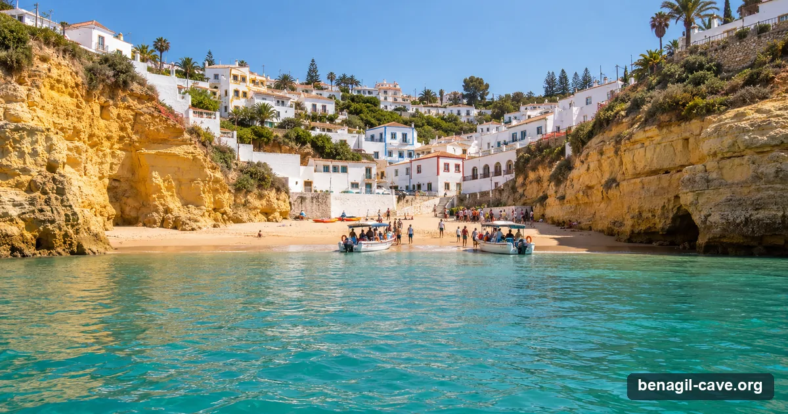

Carvoeiro is the closest town with a boat launch to Benagil — roughly 15 to 20 minutes by small boat, which means more time at the cave and less time getting there. If you want the shortest, most cave-focused trip, this is where to leave from.
Independent picks · Bookings via GetYourGuide (we may earn a commission) · Updated 12 September 2026

Carvoeiro: the boats load straight off the town beach, and the cave is a quarter of an hour east.
~15–20 minBy sea to the cave
HighTour supply
€30From, per adult
7Bookable online
From Carvoeiro
Why leave from Carvoeiro
Carvoeiro sits just west of Benagil, and its little beach — Praia de Carvoeiro — is a working boat ramp in summer. Because the cave is only a short hop along the cliffs, Carvoeiro boats spend proportionally more of the trip at Benagil and the neighbouring grottoes, and less in transit. It’s the choice for travellers who want the cave itself, not a long scenic crossing.
The town is also one of the prettiest on this coast, wrapped around its cove, so it’s an easy place to build a half-day around: a morning boat trip, then lunch on the square.
Logistics
Getting there & parking
The essentials
Departure point: Praia de Carvoeiro — ticket booths on the beach square, boats launch straight off the sand.
Time to the cave: ~15–20 min each way by small boat.
Driving here: From Faro airport ~40–45 minutes via the A22 (exit Lagoa/Carvoeiro). From Albufeira ~25 min, from Portimão ~20 min.
Parking: Limited but better than Benagil — a free clifftop lot behind the church (about a 5-minute walk down), plus paid and on-street spaces. Fills fast in summer; arrive early.
One-way sea times, approximate. The closest launches spend the most of your trip at the cave.
Walkable trip: from Carvoeiro’s main square it’s a two-minute walk to the beach booths. Check in about 30 minutes before departure in peak season.
Tours
Benagil tours from Carvoeiro
The Carvoeiro boats are small by design — they nose into the caves the catamarans can only look at. Below, the tours you can book online with live dates, then the two established Carvoeiro operators you can book direct.
Bookable online — from Carvoeiro and the nearest launches
Our top pick from Carvoeiro has its own calendar just below; these are the alternatives, ordered by rating and price with the higher-end trips first; the most-booked boat and the cheapest seat are always in the list, private boats last. Only 1 of these leave from Carvoeiro itself; each card says where it departs. Every card opens the live GetYourGuide page.
Prices are GetYourGuide "from" prices in US dollars, per person unless the card says "priced per boat" (private boats are listed after the per-person tours), ratings and review counts as captured 12 September 2026; they move with season and availability — the live widget and the booking page are the reference. Sea permitting: swell over about 1.5 m closes the cave. Booking through these links may earn us a commission at no extra cost to you; it never changes the order or the verdicts.
Book direct — the Carvoeiro operators on their own sites
Small open boatsfrom €30RNAAT 161/2014 ✓Travelers’ Choice
Turismo-de-Portugal-certified (Vela Brilhante, Lda) with a wall of TripAdvisor awards. The core Benagil boat tour is about an hour from €30; a Benagil & Marinha option runs ~1h30 from €35. A safe, established first choice.
Fleet of six 6 m boats€32.50RNAAT 156/2011 ✓4.9 ★ · ~768 reviews
Thirty-plus years on the beach with tiny six-metre boats that slip into spaces the catamarans can’t. Carvoeiro Benagil & Marinha is €32.50 (~1h15). Walk-up booth on the square or book online. Not the same company as Carvoeiro Caves — both are good.
Direct prices are starting adult fares in euros (June 2026, licences re-checked September 2026) and change seasonally; confirm at booking. ✓ = RNAAT tourism licence verified on the operator's own site. Full profiles on the operators page.
See every operator, side by side
Compare all 15 Benagil operators by price, craft, cave time, licence and rating.
From Carvoeiro: Benagil Caves and Praia da Marinha Boat Trip — 4.9★ from 1,288 reviews, from $41 on GetYourGuide, free cancellation on most dates. Pick a date below; it confirms on GetYourGuide. Sea permitting: swell over about 1.5 m closes the cave, so check the live sea conditions the evening before.
Before You Book
The access rules apply here too
Wherever you leave from, the same binding rules govern the cave itself (Edital 019/2024 of the Capitania do Porto de Portimão, in force since 13 August 2024, amended by Edital 009/2025 on 30 July 2025): you cannot land on the beach inside, you cannot swim or float in, and motorised boats may only enter for a brief look. Kayaks and SUPs go in with a guide, one guide for every six craft. It's the same cave under the same law — the town only changes how you get there.
The 2024 rules in one picture: boats by the western arch for two minutes, guided paddlers by the eastern entrance for eight, nobody on the sand.
Full detail, with the official sources, is on the access-rules section of the main guide. If any Carvoeiro operator promises a stop on the beach inside Benagil, that's the pre-2024 experience — check before paying. Swell over about 1.5 m closes the cave regardless of tide: check the live sea conditions before you fix a date.
FAQ
Questions about Benagil from Carvoeiro
About 15 to 20 minutes each way by small boat — the shortest motorised crossing of any town. Most Carvoeiro tours run around 1 to 1h30 in total, taking in Benagil plus neighbouring caves.
Starting adult fares are about €30 (Carvoeiro Caves) to €32.50 (Carvoeiro Tours) for the core boat trip direct; online, the Carvoeiro departures start from roughly the same level in US dollars, with live dates and free cancellation.
Yes — boats leave straight off Praia de Carvoeiro, a couple of minutes from the town square. Park behind the church and walk down.
Boats enter the Benagil cave briefly when sea conditions allow, under the 2024 rules as amended in 2025. You cannot land on the interior beach or swim in from any operator.
More Benagil & coast trips, live
GetYourGuide's full Benagil list with real-time dates — kayak and SUP tours, catamarans with dolphins, sunset runs and private boats from every town on the coast.